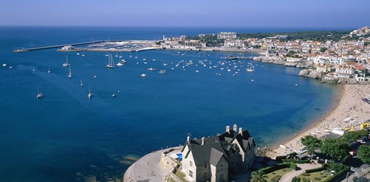
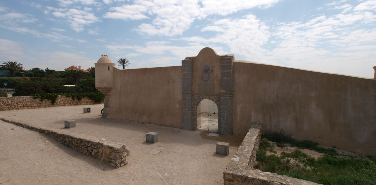
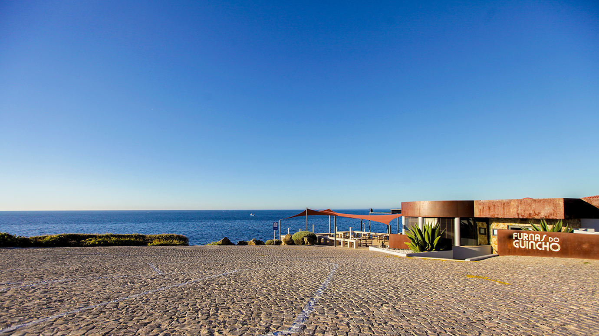
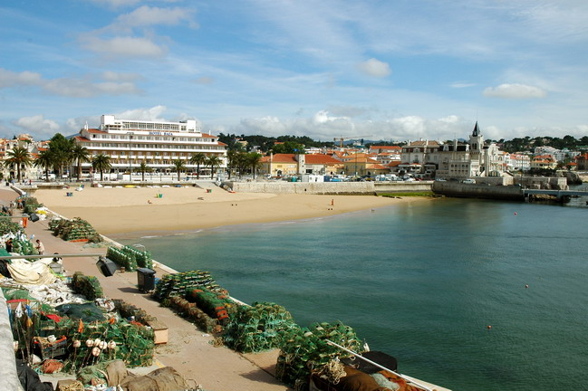
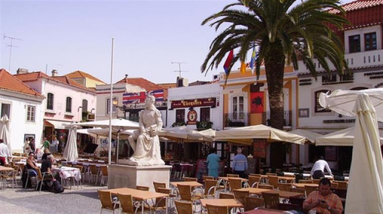

Guia de Cascais
Home
Alojamento
Gastronomia
Galeria
Log Out

Baía de Cascais
Boca do Inferno

Forte de São Jorge de Oitavos

Furnas do Guincho

Praia dos Pescadores

Vila de Cascais
Powered by Tomás Lopes